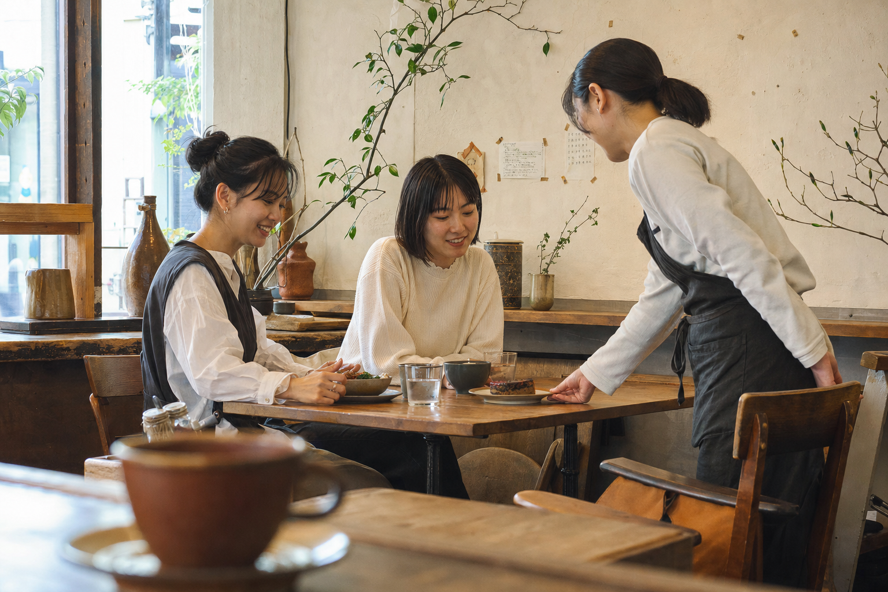

Plant-based cafe / Osaka
野菜の店、だけじゃない。昼ごはんを食べて、話して、もう一杯コーヒーを頼みたくなる場所。
ヴィーガンかどうかを考える前に、食べたいものがある。moriは、その順番を大切にします。
季節野菜と穀物サラダ。ひと皿で、きちんと満たす。
卵・乳製品を使わない、毎日食べたい甘さ。
豆の香りと植物性ミルク。話の続きをどうぞ。

Not a showroom. A neighborhood.
ひとりで本を読む日も、友だちと話し込む日も。きれいすぎず、気取らず、長居を急かさない。
「体にいい」より先に、「また食べたい」がある。
Opening soon